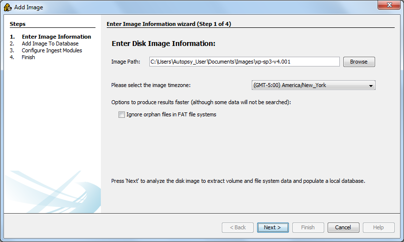

Adding An Image
There are two ways to add an image to the currently opened case:
- Go to "File" and select "Add Image..."
- Select the
 icon on the toolbar
icon on the toolbar
This will bring up the Add Image wizard. It will guide you through the process. Here are some notes on what is going on during the process:
- The first panel will ask for the location and type of the disk image to add. You will also need to specify the timezone that the disk image came from so that the dates and times can be properly displayed and converted.

- The second panel is when Autopsy is analyzing the disk image and populating the database with basic information. This can take a few minutes for large images.

- The third panel allows you to choose which ingest modules to run on the image. Refer to the Image Ingest part of the help guide for more details.
- Once you select the ingest modules that you want to use, they will run in the background. You can choose to add another image or exit the Add Image wizard.
Note that Autopsy will store the path to the image in its configuration file. If the image moves, then Autopsy will give an error because it can't find the image file.